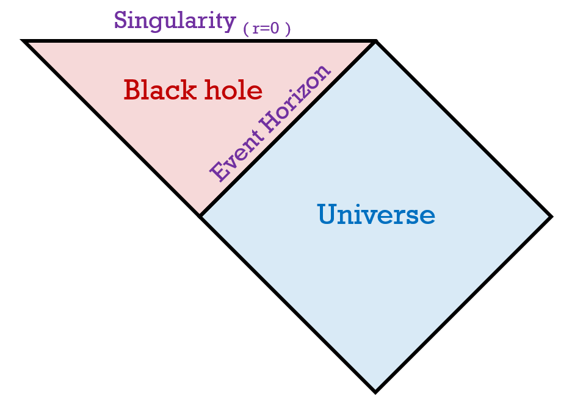
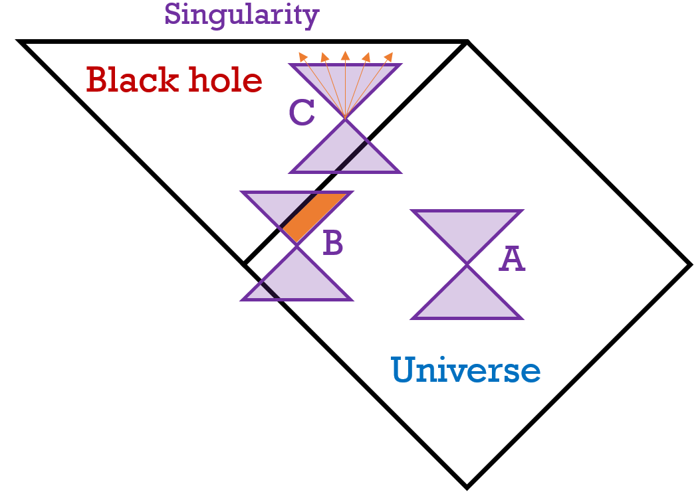
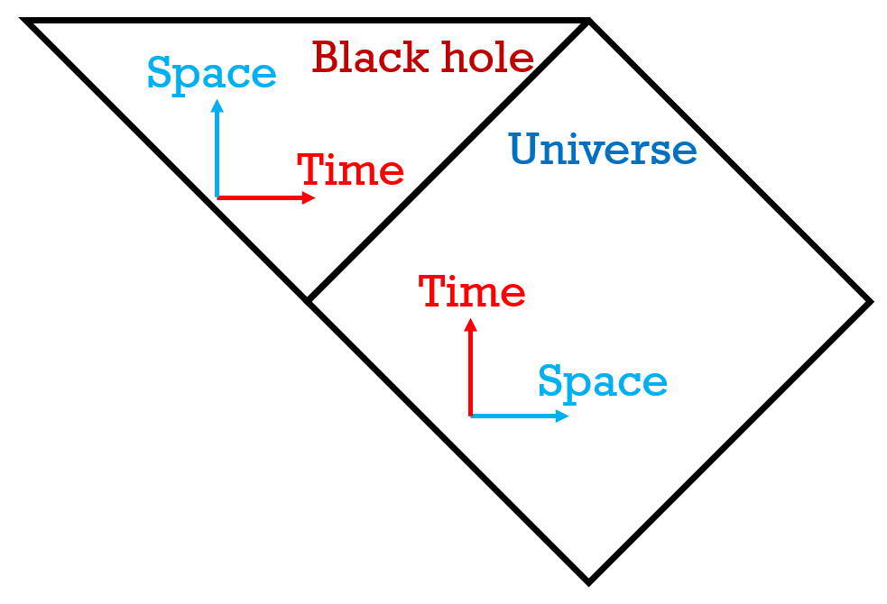
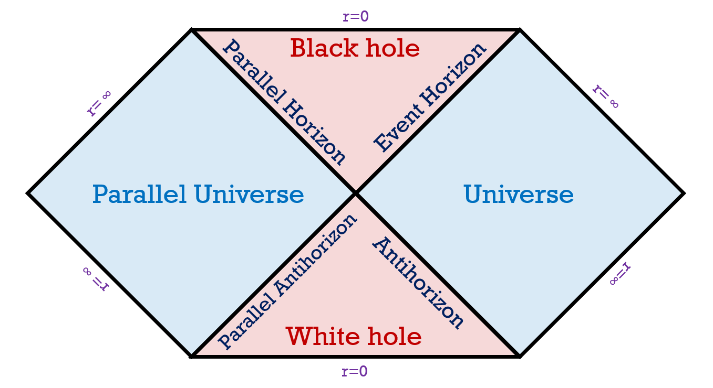

A schwarzschild black hole is the simplest black hole: one that doesn't spin, and has no charge.
Karl Schwarzschild was the physicist who described the geometry of this type of black hole. It was a solution to einstein's field equations which described the geometry of curved spacetime with mass or energy in it. Schwarzschild assumed spherical symmetry, and that lead to him discovering the schwarzschild metric, whose geometry can be shown through penrose diagrams (more on Carter-Penrose diagrams).

The diagram on the right shows a schwarzschild black hole. The space becomes infinite at the horizon, since it gets infinitely stretched in a normal spacetime diagram.
The fact that light still travels at 45 degree lines is important in this diagram. Let's look at some light cones in this diagram.

Light cone A: This is a normal light cone that is at the center of the diagram.
Light cone B: At this point the observer is approaching the event horizon. The orange section of the light cone is the part that includes future events where the observer can escape the black hole, so he has a chance of escaping.
Light cone C: The observer has crossed the event horizon, and all future events lead to the singularity. Crossing back over the event horizon would require a line less than 45 degrees, which means travelling over the speed of light.

One important thing to note is that the section for the black hole is like a reflection of the universe's axes from the event horizon; in other words, the axes are switched inside a black hole.
In the universe, time flows forward, and can never flow backward. Inside the black hole, the direction of flow is the same, but since the axes are switched, space flows inescapably into the singularity while there's not much of a direction of time.
One question that may be lurking in your mind is, what is that other horizon of the black hole? There's one edge that connects it to the rest of the universe, and another that doesn't connect to anything. This is because these diagrams only show half the schwarzschild geometry. The full diagram looks like this:

The other edge connects the black hole to a parallel universe, and the section below is a white hole, the opposite of a black hole. The axes switch applies to the white hole, so space flows inescapably out of the white hole.